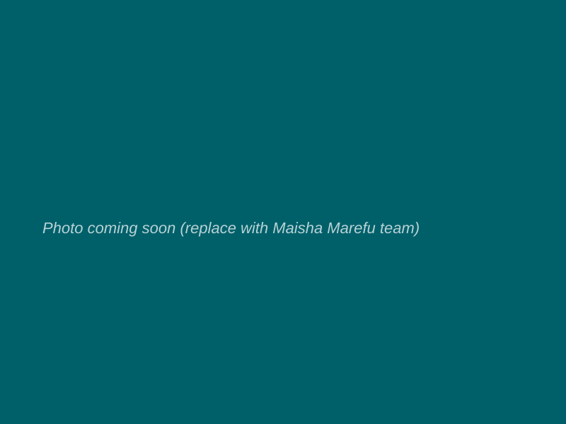

Turning Dependency into Dignity
Lorubae's Biggest Supporter — Building the Future of Samburu East
Visit Maisha Marefu →Founded in 2022 by Louise Soubrier and Sergio Caldeira, Maisha Marefu is a non-profit operating at the intersection of social impact, local economic empowerment, and regenerative agriculture in Kenya. Their work develops locally rooted systems that address food security, land degradation, and income generation — with a strong focus on women's and youth leadership. Their guiding philosophy is simple and powerful: they work with communities, not for them.
"Maisha Marefu co-builds community systems rooted in local leadership and trust."

Four pillars of sustainable community transformation
Moringa systems, soil restoration, and biochar production — rebuilding the land while feeding the community.
Ensuring communities have consistent access to nutritious food through sustainable, locally-led agricultural initiatives.
Creating income-generating activities that empower the most vulnerable — particularly youth — to become self-reliant.
Placing women at the centre of economic change, building leadership and enterprise from within the community.
A 5-step community-led project methodology
Attention is directed toward rural and economically disadvantaged regions where the need for support is most acute — communities that lack access to essential resources and face the greatest challenges.
Partners are identified who share Maisha Marefu's objectives and have the capacity to collaborate — committed to sustainable development and genuinely motivated to create positive change.
Before any project begins, a thorough assessment of the community's strengths, resources, and objectives is conducted — ensuring every solution is rooted in what the community already has.
Communities are empowered to take ownership of their own development through facilitated self-assessment sessions — identifying their own strengths, challenges, and opportunities.
A comprehensive, community-authored action plan is developed — with specific goals, activities, timelines, and responsibilities — ensuring transparency and genuine local ownership.
Maisha Marefu identified Lorubae Comprehensive School as a partner whose values and community align with their mission. In the arid expanses of Samburu East — where resources are scarce and opportunity often feels distant — they chose to invest. What followed was a partnership built not on charity, but on shared belief in what this community could become.
Specific project details and photos to be provided by the school.
Maisha Marefu co-builds community systems rooted in local leadership and trust.
— Maisha Marefu Representative
Our students are learning to be architects of their own futures and leaders of their communities.
— Lorubae Student Leader
If you are moved by what Maisha Marefu and Lorubae are building together, reach out. Every contribution — of resources, expertise, or partnership — changes what is possible in Samburu East.